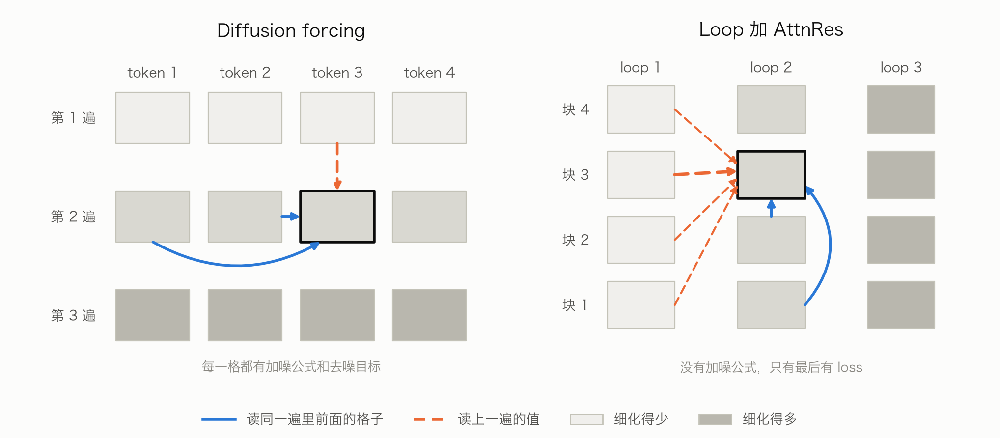
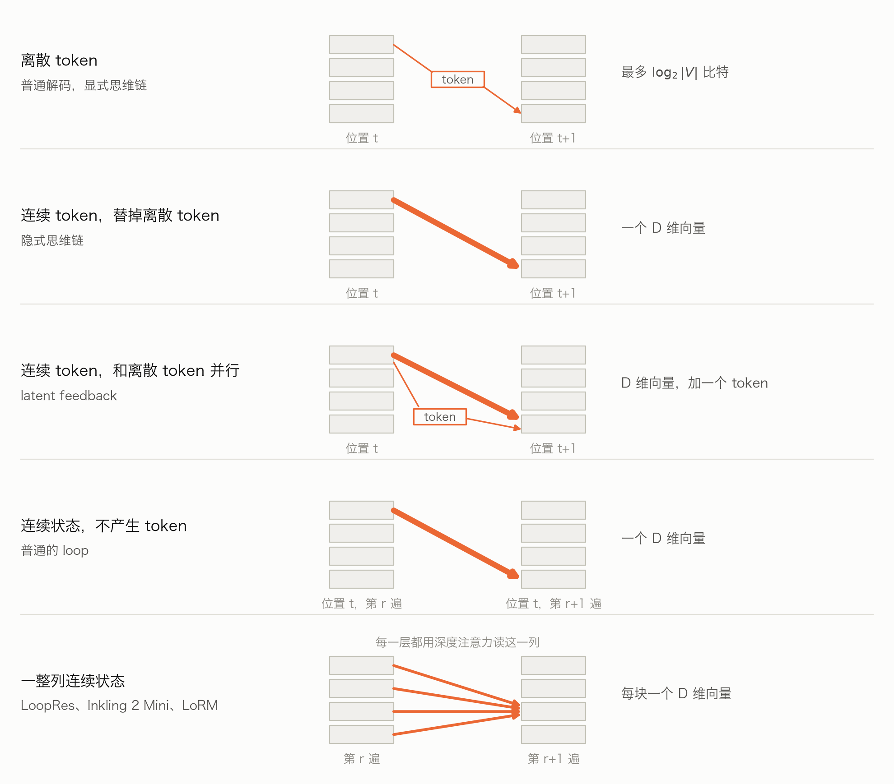
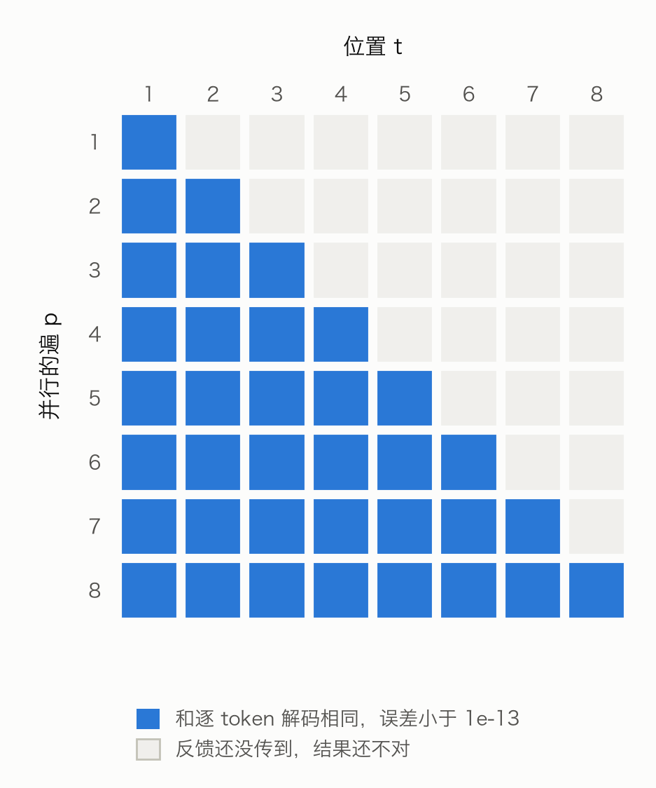
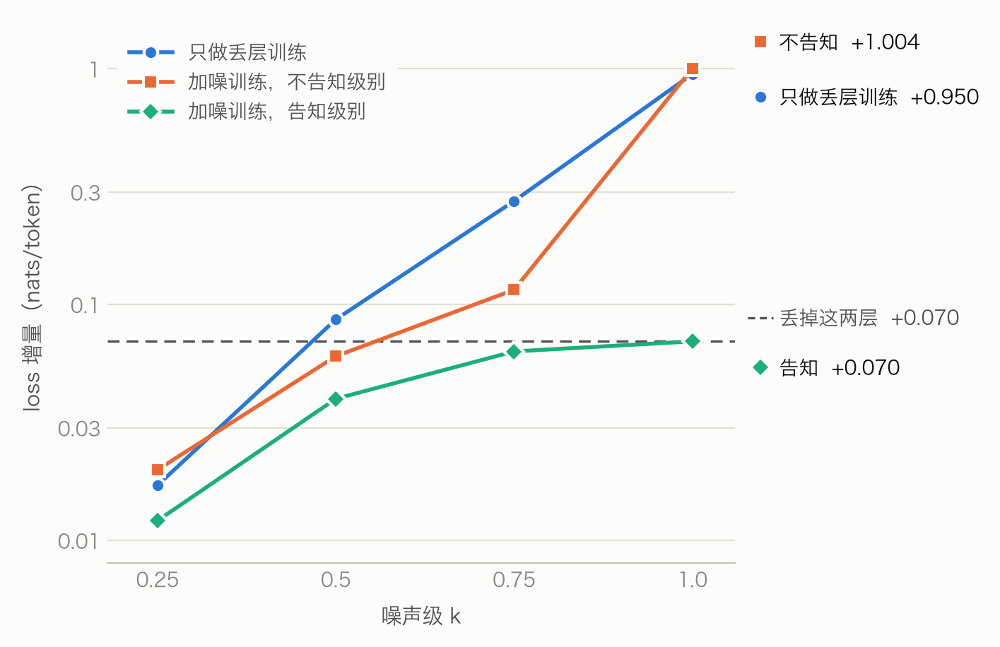

Diffusion Forcing 的对偶：时间轴变成 Attention Residuals，噪声轴变成 Loop Transformer
一个观察：最近的两条架构线，对深度做注意力和让层循环，是同一个对偶的两半。
最近有两条线，看起来没什么关系。
一条在改残差连接。Attention Residuals（下面叫 AttnRes）把层与层之间的相加，换成了对之前各层输出的 softmax 注意力。另一条在做 loop transformer：Huginn、Ouro、Inkling 2 Mini、LoopRes，让同一组层反复跑几遍。
这篇文章想说服你一件事：这两条线是同一个对偶的两半，对偶的另一边是 diffusion forcing。 Diffusion forcing 有两根轴，时间和噪声。把时间轴对偶到网络深度上，得到 AttnRes。把噪声轴对偶过来，得到 loop transformer。
先说清楚这篇文章是什么。它是一个观察加几条推论，不是一篇论文。其中三处我能写成严格的式子，并且用一个小脚本核对过（附录 C）。其余是类比，出现的地方我会标明。文中加框的"假设"是我自己的判断，没有验证过。
内容按这个顺序走：
- AttnRes 已经做了一步对偶，但只动了一根轴。
- Diffusion forcing 是一个有两根轴的对象。
- 两根轴分别对偶过去，得到一个式子和一张对应表。
- 噪声轴为什么落在 loop 上：遍与遍之间传的是连续 token。
- 对偶预言的结构，已经有三个模型造出来了。
- 对偶里还空着的一格：每层自己的 loop 次数。
- 对不上的地方。
1. 已知的一步：AttnRes 把时间上的注意力搬到深度上
从残差连接的式子开始：
\[ h_l = h_{l-1} + f_{l-1}(h_{l-1}) \]记第 \(i\) 层的输出为 \(v_i = f_i(h_i)\)，\(v_0\) 是 embedding。把上式展开，每一层读到的是之前所有层输出的和：
\[ h_l = \sum_{i<l} v_i \]再看线性注意力（或者 RNN）在时间上的状态更新：
\[ S_t = S_{t-1} + k_t v_t^\top \]两个式子做的是同一件事：把之前的全部信息压进一个固定大小的状态。区别只是下标，一个是层号，一个是时间步。
AttnRes 的论文把各种残差连接统一写成一个"深度混合矩阵" \(M\)：
\[ h_l = \sum_{i<l} M_{i\to l}\, v_i \]- 标准残差：\(M_{i\to l} = 1\)。
- Highway、Hyper-Connections：\(M\) 能拆成读的一侧和写的一侧，最简单的情形是 \(M_{i\to l} = \phi(q_l)^\top \phi(k_i)\)。这时求和可以折叠成递推，写的时候 \(S_l = S_{l-1} + \phi(k_l)\, v_l^\top\)，读的时候 \(\phi(q_l)^\top S_l\)。这就是序列一侧"线性注意力等于 RNN"的那个等价，原样搬到了层轴上。
- AttnRes：\(M_{i\to l} = \mathrm{softmax}_i\big(w_l^\top\, \mathrm{RMSNorm}(v_i)\big)\)，\(w_l\) 是每层一个学出来的向量。softmax 拆不开，所以只能把每层的输出留着，随用随取。
| 时间轴 | 深度轴 |
|---|---|
| 时间步 \(t\) | 层号 \(l\) |
| RNN 或线性注意力的状态 | 残差流 |
| 门控和衰减 | Highway |
| softmax 自注意力，加 KV cache | AttnRes，加留下来的层输出 |
序列建模当年用注意力换掉了 RNN。AttnRes 在深度轴上做了同一步。论文把这叫 time–depth duality。
有两处不严格。时间轴上的 query 由内容算出，深度轴上的 \(w_l\) 和输入无关。深度轴的"序列"是网络自己一层层生成的，\(v_l\) 要等前面的层算完才有。
这个对偶只动了一根轴。被对偶的对象是一个序列模型，它本身只有时间这一根轴。如果被对偶的对象有两根轴呢？
2. 一个有两根轴的对象：diffusion forcing
Diffusion forcing 的想法是让序列里的每个 token 有自己独立的噪声级。训练时每个 token 各自随机取一个噪声级，模型要在"前面的 token 各带各的噪声"这个条件下给当前 token 去噪。两个极端我们都熟悉：
- 所有 token 的噪声级相同，是整序列扩散。
- 前面的 token 全干净，当前 token 全是噪声，是 next-token prediction。
采样时它是一张二维网格，横轴是 token，纵轴是去噪的遍。原论文用 RNN 实现，网格里的一格做的是：
\[ z_t^{(m)} = f\big(z_{t-1}^{(m)},\; x_t^{(m-1)},\; k_{m,t}\big), \qquad x_t^{(m)} = g\big(z_t^{(m)}\big) \]也就是每一格读三样东西：
- 同一遍里前面的 token，经由 \(z_{t-1}^{(m)}\)。
- 自己上一遍的值 \(x_t^{(m-1)}\)。
- 自己的噪声级 \(k_{m,t}\)。
哪一遍更新哪些 token，由一张 schedule 矩阵决定。典型的走法有三种：
- 整序列扩散：每一遍所有 token 一起降一级。
- 自回归：一个 token 去噪完，再做下一个。
- 两者之间：比如近处的 token 更干净，远处的更模糊。
Diffusion forcing 的要点是训练一次，这些走法采样时都能用。
3. 两根轴分别对偶过去
时间轴对到深度。 "同一遍里读前面的 token"，换成"同一次前向里读前面的层"。第 1 节说过，这就是 AttnRes。
噪声轴对到对隐藏状态的递推。 "每去噪一遍，所有 token 细化一级"，换成"每 loop 一次，所有层的输出再更新一次"。这就是 loop transformer。噪声级对应的是这一层已经被更新过几次，方向相反：更新得越多，噪声越低。
两边可以写进同一个式子。设 \(u_{i,k}\) 是第 \(i\) 个格子在第 \(k\) 遍之后的状态：
\[ u_{i,k} = F_i\Big(\;\underbrace{\sum_{j<i} A^{\mathrm{same}}_{j\to i}\, u_{j,k}}_{\text{同一遍里前面的格子}},\;\; \underbrace{\sum_{j} A^{\mathrm{prev}}_{j\to i}\, u_{j,k-1}}_{\text{上一遍的值}},\;\; c_{i,k}\Big) \]| 符号 | Diffusion forcing | Loop 加 AttnRes |
|---|---|---|
| \(i\) | token | 层或块 |
| \(k\) | 去噪的遍 | loop |
| \(A^{\mathrm{same}}\) | 读同一遍里前面的 token | AttnRes |
| \(A^{\mathrm{prev}}\) | 只读自己上一遍的值 | 读上一 loop 的一列输出 |
| \(c\) | 噪声级 | loop 的序号 |
| \(F\) | 所有 token 共享 | 每层各有权重 |

把每个格子当黑盒，两张图逐边对应。我用一段通用代码实现了上面的式子，换一组读函数，它分别复现了一个 diffusion forcing 式的采样器和一个 loop 加 AttnRes 的网络，数值完全相同。再把三处差别抹掉，两边就是同一个函数：
- \(F\) 沿 \(i\) 共享。Diffusion forcing 的所有 token 用同一个去噪网络，网络里每层的权重不同。
- 同一遍里怎么读。一边是内容相关的读取，一边是静态 query 的 softmax。
- 上一遍读什么。一边只读自己，一边读一整列。
所以这个对偶离"恒等"差的东西是数得出来的：上面三条，再加训练目标（第 7 节）。
观察 1. AttnRes 乘以 loop，就是 diffusion forcing 的网格转了 90 度。块内的深度注意力是它的时间轴，loop 之间的连接是它的噪声轴。
三种 schedule 也各有对应：
| Diffusion forcing | 网络 |
|---|---|
| 自回归：一个 token 去噪完再做下一个 | 一层算完再算下一层。普通堆叠是每层只算一次的特例 |
| 整序列扩散：每遍所有 token 一起更新 | 整段 loop：每次 loop 所有层一起更新 |
| 独立噪声级，采样时任选 schedule | 每层有自己的 loop 次数（第 6 节） |
前两行在 loop transformer 的文献里有名字，叫 per-layer looping 和 full-stack looping。
4. 噪声轴为什么落在 loop 上：遍与遍之间传的是连续 token
网络自己也有两根轴，深度和时间。深度给了 diffusion forcing 的时间轴，噪声轴就只能落在网络的时间轴上。一次 loop 可以看作两个真实 token 之间的一个隐式 token，所以 loop 的次数也在时间轴上。
这一节把这句话说实。
普通解码已经是一条回路
Full-bandwidth Transformer 的论文是这么起头的：自回归模型沿两根轴计算，横向是 token，纵向是深度。逐 token 解码本身就是一条回路，顶层的状态被采样成一个 token，再从底层送回去。思维链靠的就是这条回路，推理的深度随生成的 token 数增长。
但这条回路很窄。一个 \(D\) 维的向量被压成一个符号，最多 \(\log_2 \lvert V \rvert\) 比特。
所以普通的自回归模型已经有"遍"，只是遍与遍之间传的东西很少。按"传什么、放在哪"排下来，是一把梯子：
| 遍与遍之间传什么 | 放在哪 | 代表 |
|---|---|---|
| 一个离散 token | 序列里的一个新位置 | 普通解码，显式思维链 |
| 一个连续 token，替掉离散 token | 序列里的一个新位置 | 隐式思维链（Coconut），CoTFormer |
| 一个连续 token，和离散 token 并行 | 并进下一个真实 token 的输入 | latent feedback |
| 一个连续状态，不产生 token | 同一个位置重算 | 普通的 loop |
| 一整列连续状态，每块一个 | 用深度注意力读 | LoopRes、Inkling 2 Mini、LoRM（第 5 节） |

Loop 和 latent feedback 是同一个递推的两种跑法
Latent feedback 把上一个位置的顶层状态送回下一个位置的输入：
\[ h_t = f\big(e_t,\; h_{t-1}\big) \]这里 \(e_t\) 是第 \(t\) 个 token 的 embedding，\(f\) 是整叠层，它还会通过注意力读前面位置的状态。这样每来一个新 token，隐藏状态就被再细化一遍，解码时不用多跑。
Loop 是在同一个位置上反复算。Latent feedback 是把同一条回路摊到 token 轴上。噪声级在 loop transformer 里是 loop 的次数，在带 latent feedback 的 transformer 里就是序列位置。对不带反馈的普通 transformer，这句话不成立：新 token 带来的是新信息，不是对同一个状态的细化。
"遍"是什么：一个三角方程组的 Jacobi 迭代
逐 token 解码是前向代入，结果是精确的。训练时不能逐 token 跑，于是并行跑几遍，每一遍用上一遍的值：
\[ h_t^{(p)} = f\big(e_t,\; h_{t-1}^{(p-1)}\big), \qquad h^{(0)} = 0 \]这是对一个下三角方程组做 Jacobi 迭代。对 \(p\) 归纳就能看出它收敛得多快：位置 1 没有前驱，第 1 遍后就是精确的；位置 \(t\) 只依赖位置 \(t-1\) 及更早的位置在上一遍的状态，所以 \(t \le p\) 的位置在第 \(p\) 遍后都是精确的。

实际远不用跑满。Full-bandwidth Transformer 报告 3 到 4 遍后 KV 的相对误差约 1%。IFM 的 latent feedback transformer（代码库叫 LoRM）直接用 4 遍当作逐 token 解码。但这不是白来的：前者发现只用一遍和两遍的 batch 训练时，递推滚过训练深度就会发散，混入 3% 的三遍 batch 才稳定下来。
训练用整序列并行的遍，解码用自回归。这正是 diffusion forcing 的"训练一次，采样时换 schedule"，已经有人在用了。
对偶在这里多给了什么
- "连续"对应"还没去噪完"。 Diffusion forcing 里，token 在各遍之间一直是连续的带噪值，最后才定成离散的。采样出一个 token，相当于每一遍都提前定稿。这是我的读法，没有出处。
- 传的不该只是一个 token，而是一列。 对偶里被去噪的是整条序列，对过来是所有层的输出。隐式思维链和只送顶层的 latent feedback 只传了最后一个。
- 两半在这里接上。 这一列连续 token 是沿深度排开的一条序列，读它的就是 AttnRes。
假设 1. 遍与遍之间应该传一整列层输出，用深度注意力去读，而不是只传顶层的一个向量。
有两点要守住。隐式思维链的目的不同，它要替代的是显式的推理步骤，用在需要搜索和规划的推理任务上。这里只借"连续 token"这个说法，不引它的结果。另外"隐式 token"不是对所有接法都严格：Huginn 式的 loop 会覆盖上一遍的 KV，后面的位置读不到中间那几遍，每一遍都留下可读 token 的是 CoTFormer 那种接法。
5. 对偶预言的结构，已经有人造出来了
按对偶，一个网络应该有三样东西：
- 一遍之内，用深度注意力读前面的层。
- 遍与遍之间有一条连接，读上一遍的一列输出。
- 告诉读取方这是第几遍。Diffusion forcing 是把噪声级作为输入的。
过去几个月里有三个模型做了前两样，其中一个做了第三样。
Inkling 2 Mini（Thinking Machines，11 月 20 日）有 24 层，分成 4 个块，每块 6 层。第 1 块跑一遍，第 2、3 块 loop 三遍，第 4 块跑一遍。块内用 AttnRes。从第二遍起，每个子层对上一遍的第 2、3 块做一次深度注意力，得到一个 message，再经过一个低秩的门混进自己的输入。
LoopRes（NUS）在预训练模型上微调出 loop。循环的那一段用 AttnRes，每个子层的源包括：不循环的前段的输出，上一 loop 的所有块，本 loop 里前面的块。它另外加了两样：每个块在每个 loop 有一个可训练的 key，以及只看上一个 loop 的窗口。
LoRM 的 AttnRes 加 latent feedback（IFM，只有代码）是 134M 的模型，12 层 6 个块。它把上一个位置的 6 个块作为额外的源，放进每一次深度读取。
| Diffusion forcing | 对偶 | Inkling 2 Mini | LoopRes | LoRM |
|---|---|---|---|---|
| 同一遍里读前面的 token | 同一遍里读前面的层 | 块 AttnRes | 块 AttnRes | 块 AttnRes |
| 读自己上一遍的值 | 读上一遍的一列输出 | 对上一遍的两个块做深度注意力，经门并入输入 | 上一 loop 的块进同一个 softmax | 上一个位置的 6 个块进每个深度 softmax |
| 遍落在哪 | 同一个位置，3 遍 | 同一个位置 | token 轴，解码不加遍 | |
| 只依赖上一遍 | 只看上一遍 | 是 | 是，窗口为 1 时最好 | 是 |
| 噪声级作为输入 | 告诉读取方这是第几遍 | 没有按遍分的参数 | 有，每块每 loop 一个 key | 说明里没提到 |
| 每个 token 独立的噪声级 | 每层自己的 loop 次数 | 没有，固定 3 遍 | 没有，固定 | 没有 |
有三点值得看。
读法和对偶说的一样。 Goodfire 分解了 Inkling 2 Mini 每一层的输入，发现第 3 块在后面的 loop 里几乎总是读自己上一 loop 的输出。这就是"读自己上一遍的值"。LoopRes 的分析类似：循环段的第一个块主要在更新自己上一 loop 的输出，第二个块主要依赖本 loop 的第一个块。LoRM 的第二遍读的是第一遍的第 5 到 10 层，不是顶层，而且只在自己的前 8 层读。
增益主要来自跨遍的深度读取。 LoopRes 在 Qwen3-1.7B、两倍算力下，7 项评测的平均分是：Huginn 式的 loop 49.0，加上朴素的 AttnRes 53.9，LoopRes 55.8。LoRM 在相同训练算力下的验证 loss：
| 模型 | loss |
|---|---|
| Transformer | 2.4690 |
| Transformer 加 AttnRes | 2.4354 |
| Latent feedback 加 AttnRes，只送回顶层 | 2.4443 |
| Latent feedback 加 AttnRes，送回 6 个块 | 2.4319 |
只送回顶层不如不送，送回一整列才有收益。这一档的差距只有 0.004，数据多四倍的那一档是 0.017（2.3390 对 2.3556）。这是假设 1 目前仅有的直接证据，而且是他们报告的数字。
读取方要被告知级别。 LoopRes 发现靠内容分不开同一个块的各次迭代，直接优化的、按 loop 分的 key 才分得开。去掉它，四倍算力下的平均分从 57.8 掉到 55.8。
Inkling 2 Mini 没有按遍分的参数，但 Goodfire 发现模型自己长出了一个：坐标 \(d_{2027}\) 在前两遍的末尾被写成很大的正值，RMS 归一化后平均 +32.4，一个坐标占了平方范数的 46%；到最后一遍又被清掉。它是下一遍决定"读第 3 块还是第 2 块"时贡献最大的几个坐标之一。Goodfire 的推测是最后一遍之后不再需要跨 loop 通信，所以模型把它抹掉。按我的读法，没人给它级别信号，它就自己腾出一个坐标来记。
一个小实验
这一点我自己测过，在一个很小的设置里。先说明它的位置：这个实验把层输出当 token，但"噪声"用的是高斯噪声，不是少算几遍。所以它不验证这个对偶，只回答一个子问题：深度 softmax 的读取方，会不会自己认出质量差的源？
设置是一个 4000 万参数、12 层的 AttnRes 语言模型，在 TinyStories 上训练，训练时随机丢层。评测时给其中两层的输出加噪：
\[ \tilde b = \cos\theta \cdot b + \sin\theta \cdot \mathrm{rms}(b)\cdot \epsilon, \qquad \theta = \tfrac{\pi}{2} k \]答案是不会。带噪的层拿到的注意力权重，是干净时的 1.00、1.02、1.06、1.15 倍（\(k\) 从 0.25 到 1），反而略升。原因算得出来：加噪让 logit 的期望正好缩小 \(\cos\theta\) 倍，实测斜率是 0.92、0.70、0.37、0，理论值是 0.924、0.707、0.383、0。但 logit 缩小只让高于平均的源降权，低于平均的源反而升权，合起来没有降。
修法是在 logit 上加一个由级别决定的偏置 \(\beta \log\cos\theta\)，\(k=1\) 时等于把这个源屏蔽掉。

- 告知之后：四个噪声级下的代价是 +0.012、+0.040、+0.063、+0.070，丢掉这两层是 +0.070。
- 同样加噪训练但不告知：+0.020、+0.060、+0.115、+1.004。
- 训练里没见过的误差：把这两层的权重量化到 2 bit，告知是 +0.067，不告知是 +0.193。
- 全深度的代价：告知后比只做丢层训练的模型贵 0.009，不告知贵 0.065。
偏置的形状有讲究。只用两个零初始化的标量时基本没用：纯噪声的两层代价是 +0.28，丢掉它们只要 +0.06。偏置要能表达"完全屏蔽"才行。
假设 2. 读取方分不清一个源被细化到了什么程度，必须被告知。LoopRes 按 loop 分的 key、Inkling 2 Mini 自己长出来的 \(d_{2027}\)、这里的级别偏置，是同一件事。
系统侧也是同一个问题
遍与遍之间的连接，是沿细化轴的顺序依赖。它在两边带来同一个麻烦，解法也是同一类。
- Loop 模型：Geiping 等人给 3.5B 的 loop 模型做了并行采样器，不等一个位置的循环收敛就起草下一个 token，后面的遍同时精修多个位置。
- Latent feedback：speculative decoding 要并行验证一串草稿，但每个位置需要的反馈状态还在算。Feedback Shortcut 先用 MTP head 的状态当替身做验证，下一次调用再纠正，作者说解码快 2.4 到 2.8 倍。
两边都是先读一个还没细化完的值，之后再修。这也正是 diffusion forcing 本来就允许的事：读还没去噪完的历史。
6. 还空着的一格：每层自己的 loop 次数
上一节的表里，最后一行三个模型都是"没有"。而这一行正是 diffusion forcing 名字的来历：训练时每个 token 有独立的噪声级。对偶过来，是每一层有自己的更新次数。
执行表
用第 3 节的记号，再加一张表 \(S_{k,i} \in \{0,1\}\)，表示第 \(k\) 遍里第 \(i\) 个格子是否更新。Diffusion forcing 的 schedule 矩阵和"哪一遍跑哪些层"是同一个对象。现有的架构各是一张填好的表：

我核对过带执行表的式子：按 Inkling 2 Mini 那张表去跑，结果和直接写"前段一遍、中段三遍、后段一遍"的前向完全相同。
一个反对意见
每层跑几次，模型设计的时候就定了。想让某一段多算，就把它放进循环的那一段，或者干脆多堆几层。Inkling 2 Mini 的"1、3、3、1"本身就是一张逐块的次数表。
这张表怎么填是有差别的。LoopRes 论文的对比里，两种填法都用普通残差：四倍算力下，每个块连续重复再进下一块是 47.9 分，整段一起 loop 是 51.8 分。两倍算力下两者几乎一样，49.2 和 49.0。
反过来问：既然一张固定的表有效，不同的表又有差别，这张表为什么要人来填？能不能做成可学习的参数或者结构？
已经有人在学这张表，但只学了一半
| 工作 | 学什么 | 摘要里的结果 |
|---|---|---|
| CoLa | 每个样本一条路线，层可以跳过或重复，用 MCTS 搜 | 原本答对的样本 75% 以上有更短的路线，原本答错的 60% 以上能找到答对的路线 |
| PoLar | 用一个小网络预测每个输入的路线 | 数学推理上更准，常常还少跑几层 |
| Dr.LLM | 每层一个 router，选跳过、执行或重复 | 最多 +3.4 个点，平均每题少跑 5 层 |
| MACRO | 每个任务一条静态路线 | 平均 +5.0% |
这四个都在冻结的普通预训练模型上做，权重不动。它们碰到的限制很一致：
- 模型对改路线不鲁棒。 失败的路线会把残差流推到后面的层没见过的分布上。
- 门和权重一起学会把轨迹带坏。 在 Ouro 上的诊断是，学出来的退出门不如先用固定的先验把每个深度都监督好，事后再读置信度。
- 放开读的自由会塌到捷径。 LoopRes 的朴素 AttnRes 版在 7 个 loop 时，经过每个 loop 的那条路径只剩 0.05% 的权重。
这些说的是同一件事：权重只在一张执行表下训练过，换一张表就出了分布。
Diffusion forcing 给的正是这个问题的解法。训练时让表随机，每个 token 独立取噪声级，并把级别告诉模型；采样时再选表。对偶过来是两步：
- 先训权重。 每个块的更新次数独立随机，并告诉读取方每个源被更新过几次。这样任何一张表都在训练分布之内。
- 再学表。 权重定下来之后再搜或者学，不和权重一起学。
假设 3. 执行表要可学习，权重得先在随机的表下训过。先训权重，再学表。
对服务来说，三种"可学习"的代价差得很远：
- 每个算力档一张静态的表：没有额外代价。支持 Inkling 2 Mini 的几个推理框架里，遍数是启动时的常量，前向就是按一张固定的层访问表走的。
- 按请求选表：要按表分 batch，每张表一份 CUDA graph。
- 按 token 选表：后面的位置会读到没算过的 KV。
假设 4. 最先落地的会是每个算力档一张静态的表。
还没做的实验
把上面那个小模型改成 4 层、3 个 loop、权重跨 loop 共享，训三个：固定的表，整体随机的遍数，逐层独立随机并告知次数。然后在每个模型上枚举几百张表。
我想看三件事。同样 8 次层更新，逐层随机的模型上最好的那张表，比整体随机的模型跑两遍好不好。逐层随机的模型跑满时，比固定表的模型差多少。固定表的模型换到非均匀的表时，是不是退化得比逐层随机的模型厉害。
这个实验我还没跑。即使结果是正面的，4000 万参数的模型也只能说明机制，说明不了大模型上的收益。
7. 对不上的地方
- 没有加噪公式。 Diffusion forcing 能用封闭公式直接造出任意噪声级的 token。"少更新两次的层输出"只能真的少算两次。
- 没有逐格的目标。 Diffusion forcing 的每一格都有去噪损失，loop 模型只有最后的 next-token loss。目前没有定理说多 loop 一次等于去噪一步。"噪声级对应更新次数"是类比。
- 一座可能的桥。 把 loop 看成不动点迭代，用到不动点的距离当噪声级。它是单调的，但不是一个分布，也没人证明训练出来的 loop 一定收缩。第 4 节里那个会发散的例子说明不保证。
- 权重不沿深度共享。 Diffusion forcing 的所有 token 用同一个网络，这边每层的权重不同。
- 遍数差一个量级。 扩散有几十到上百个噪声级，现在的 loop 只有几遍。
- 网络还有第三根轴。 真实的 token 带来新信息。把 loop 和 token 都算作时间，只在带 latent feedback 时才严格。
- 小实验用的是高斯噪声。 它不是"少更新几次的层输出"。第 5 节的数字只说明读取方需要被告知级别，不验证这个对偶。
8. 结尾
回到开头的问题：这两条线有没有关系。
观察 2. 现有的 loop 模型已经是 diffusion forcing 网格的转置。块内的 AttnRes 是它的时间轴，遍与遍之间那一列连续 token 是它的噪声轴。只是训练时只用了一张执行表。
假设 5. Diffusion forcing 从"所有 token 同一个噪声级"走到"每个 token 独立"，得到的是采样时任选 schedule 的自由。Loop 模型下一步会走同一段路：从一张设计时填好的执行表，走到在随机的表下训练、事后再选表。
Inkling 2 Mini 是从头训练的产品模型，LoopRes 是在预训练模型上微调，LoRM 是在研究 latent feedback。三家的出发点不同，却造出了几乎同一个结构。我愿意把这当作这个对偶不只是巧合的一点证据。
附录 A：记号
| 记号 | 含义 |
|---|---|
| \(v_i\) | 第 \(i\) 层（或块）的输出，\(v_0\) 是 embedding |
| \(M_{i\to l}\) | 深度混合矩阵，第 \(l\) 层读第 \(i\) 层输出的权重 |
| \(u_{i,k}\) | 第 \(i\) 个格子在第 \(k\) 遍后的状态 |
| \(A^{\mathrm{same}}\)、\(A^{\mathrm{prev}}\) | 读同一遍里前面的格子、读上一遍的格子 |
| \(c_{i,k}\) | 条件：噪声级，或者 loop 的序号 |
| \(S_{k,i}\) | 执行表，第 \(k\) 遍里第 \(i\) 个格子是否更新 |
| \(h_t^{(p)}\) | 并行第 \(p\) 遍后位置 \(t\) 的顶层状态 |
| \(k\)、\(\theta\) | 小实验里的噪声级，\(\theta = \pi k / 2\) |
附录 B：小实验的设置和数字
- 模型：decoder-only，12 层，宽 384，6 个头，约 4066 万参数。每层的输出单独算一个源，每层两个读取点，输出前再有一个，共 25 个。
- 数据和训练：TinyStories 训练集的前 15%，6000 步，每步 64×256 个 token，没有训到收敛。
- 训练时的扰动：25% 的样本在随机深度截断；每层 10% 的概率丢掉；加噪的模型里每层再有 3% 的概率取一个 0 到 1 的噪声级。
- 级别偏置：\(\beta \log\cos\theta + \alpha k + \gamma k^2\)，\(\beta\) 初值 1，另外两个初值 0，这三个标量的学习率是其他参数的 5 倍。
- 评测：验证集的前 512 个窗口，16 组随机选的两层，loss 的单位是 nats 每 token。
两层被扰动后 loss 的增量，相对各自的干净 loss，种子 1：
| 模型 | 全深度 loss | \(k\)=0.25 | \(k\)=0.5 | \(k\)=0.75 | \(k\)=1.0 | 2 bit | 丢这两层 |
|---|---|---|---|---|---|---|---|
| 只做丢层训练 | 1.771 | +0.017 | +0.086 | +0.275 | +0.950 | +0.144 | +0.077 |
| 加噪 3%，不告知 | 1.836 | +0.020 | +0.060 | +0.115 | +1.004 | +0.193 | +0.073 |
| 加噪 3%，告知 | 1.779 | +0.012 | +0.040 | +0.063 | +0.070 | +0.067 | +0.070 |
带噪层拿到的注意力权重相对干净时的比例：
| 模型 | \(k\)=0.25 | \(k\)=0.5 | \(k\)=0.75 | \(k\)=1.0 |
|---|---|---|---|---|
| 只做丢层训练 | 1.00 | 1.02 | 1.06 | 1.15 |
| 加噪 3%，不告知 | 0.87 | 0.58 | 0.31 | 0.17 |
| 加噪 3%，告知 | 0.84 | 0.56 | 0.24 | 0 |
局限：只有一个种子；新偏置同时改了形状和学习率，两个因素没有分开；\(k=1\) 时告知等于丢层是偏置的构造决定的，有信息量的是中间的级别和量化那一列。
附录 C：核对过的式子
check_identities.py 只依赖 numpy，几秒钟跑完：
uv run --with numpy python check_identities.py
| 核对项 | 内容 | 最大误差 |
|---|---|---|
| A1 | 通用的网格递推复现 diffusion forcing 式的采样器 | 0 |
| A2 | 同一段代码复现 loop 加 AttnRes 的网络 | 0 |
| A3 | 抹掉三处差别后，loop 网络等于那个采样器 | 0 |
| B | 带执行表的递推复现"前段一遍、中段三遍、后段一遍" | 0 |
| C | 并行 \(p\) 遍后，位置 \(t \le p\) 等于逐 token 解码 | 6e-14 |
| D | 加噪后 logit 的期望缩小 \(\cos\theta\) 倍（蒙特卡洛） | 相对 0.3% |
| E1 | 可分的深度核等于固定大小状态的递推 | 7e-15 |
| E2 | 零初始化时 AttnRes 过了 RMSNorm 等于 PreNorm 残差 | 2e-12 |
这些核对用的都是随机权重的小网络。它们说明式子和对应表写对了，不说明训练出来的模型有什么性质。
参考
- Attention Residuals：arXiv 2603.15031
- Diffusion Forcing：arXiv 2407.01392
- Inkling 2 Mini 的解释工作：Goodfire, Interpreting Inkling 2 Mini
- LoopRes：项目页，论文
- LoRM：代码仓库，AttnRes 加 latent feedback，Feedback Shortcut 的推文
- Full-bandwidth Transformer：arXiv 2608.08888
- Huginn：arXiv 2502.05171
- Loop 模型的并行采样器：arXiv 2510.14961
- How to Loop Your Transformer：arXiv 2610.40325
- Coconut：arXiv 2412.06769；CoTFormer：arXiv 2310.10845
- 学路线的工作：CoLa arXiv 2507.07996，PoLar arXiv 2606.06574，Dr.LLM arXiv 2510.12773，MACRO arXiv 2608.05872
- 路线的限制：arXiv 2610.04751，arXiv 2607.20519